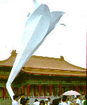

呂清夫 撰文

猶記得少年時代，為了採摘野百合，曾經攀爬過北海岸的懸崖峭壁，可能由於缺少運動細胞，當時曾經摔得全身傷痕累累，但是為了那種挺拔､純白､清香之美，也為了不服輸，我還是一直往上爬。也許是個人的這點機緣，使我對野百合有一種特別的感覺。我一直覺得九○年代台灣給人印象最深刻的新聞之一應該是一九九○年春天的學運，因為那個時候學生們製作的「民主野百合」至今還令人記憶猶新，雖然當時的「民主野百合」早已不見了。那時的「民主野百合」做得其大無比，又很傳神，放在中正紀念堂的廣場上可以說滿超現實的，也可以說給這個廣場帶來全新的感覺，她的巨大使人想到普普藝術，她的短命也使人想到觀念藝術。觀念藝術的精義之一是，藝術品不可以獨佔，任何人都可以不花一毛錢而擁有藝術，因為那種作為藝術的觀念只要你有感覺，人人便得而有之，而且一旦擁有，便永不消失。對於那時的「民主野百合」，我寧可用藝術品的眼光來看她，她可以說是三千多個學生的集體創作。在當時自然是學運的一種精神象徵，但他們不用陳腐的圖騰符號，而改用這麼一個相當富於人文關懷的東西，可以說正是一種創意跟靈氣的表現。原來台灣在一九九○年三月十六日，曾有十幾個學生在中正紀念堂靜坐，抗議國代利用總統大選「為自己謀福利」，但是短短四天之中，靜坐學生竟然驟增為三千多人，令整個社會為之動容。雖然當時李登輝先生認為這是學生「愛國愛鄉」的行動，但是也有不少人持著相當保留的態度，例如救國團並未派員探望靜坐學生，當年的青年節照常舉辦晚會､舞會。當時的新聞局長更質疑，這場運動之中何以「並未高舉國旗？」尤有甚者，三月十八日中正堂的國旗被燒毀､旗杆被鋸斷，有的議員還怪罪靜坐學生「見死不救」。並質疑國旗與「民主野百合」何者比較重要？其實這個「民主野百合」是在學運快結束的二十一日才推出來的，所以何者重要實在無從比較。當時的野百合高達七公尺，由學生們用鉛管與帆布花一天一夜趕工而成，之所以選用野百合，可以說是因為她的超黨派，他們還指出，野百合是台灣固有的品種，盛開於春天，她可以綻開於任何惡劣環境中，而在魯凱族中，她更是尊容的象徵。因之，她代表了純潔、崇高、草根性、自主性、生命力。學生們可能想在二十二日撤離中正堂之後留下一點紀念。但是不幸在二十三日夜間便傳出「民主野百合」遭到不明人士焚毀的消息。學生們在痛心之餘，決定重塑「民 主野百合」，並說她是永遠燒不掉的，他們宣稱，這個社會只要有不公不義，他們必將再回來靜坐。用精神象徵作為藝術品可以說不乏先例，德國觀念藝術家哈克（h. haac）便仿製了一件納粹時代的方尖碑，上面
畫有納粹的猛鷲等符號，其台座上刻有猶太人､吉普賽人､奧國人､士兵被殺的數字，但不久即被「新納粹」放一把火燒掉。另外他也仿製了賓士公司的廣告塔，並在其中揭發了某些大企業雖然贊助現代美術，但是同時也支持軍火輸出或種族隔離政策，哈克曾用詳細的資料將其中的狀況採入作品之中，成為社會批判要素極強的創作。哈克的這些作品雖然都很短命，但因涉及了公共的議題，曾被列入公共藝術。
主野百合」，並說她是永遠燒不掉的，他們宣稱，這個社會只要有不公不義，他們必將再回來靜坐。用精神象徵作為藝術品可以說不乏先例，德國觀念藝術家哈克（h. haac）便仿製了一件納粹時代的方尖碑，上面
畫有納粹的猛鷲等符號，其台座上刻有猶太人､吉普賽人､奧國人､士兵被殺的數字，但不久即被「新納粹」放一把火燒掉。另外他也仿製了賓士公司的廣告塔，並在其中揭發了某些大企業雖然贊助現代美術，但是同時也支持軍火輸出或種族隔離政策，哈克曾用詳細的資料將其中的狀況採入作品之中，成為社會批判要素極強的創作。哈克的這些作品雖然都很短命，但因涉及了公共的議題，曾被列入公共藝術。